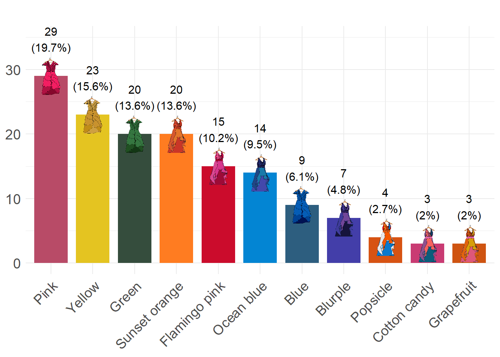

2 Visualizing the data
Note
Again, please note that data paths are relative to the root of the GitHub repository
Warning
This chapter requires data from Section 1.2 to be loaded!
## extra packages
require(ggimage)
require(packcircles)
require(ggrepel)
require(cowplot)The most worn looks
Code
## map hex colour to outfit
dressColorMapping <- unique(surpriseSongsDressColours %>% select(DressName, ColourHex1))
colorPaletteDresses <- setNames(dressColorMapping$ColourHex1, dressColorMapping$DressName)
pathToDressColours <- "dress_images/images_high_res/cropped/"
## map outfits to the corresponding images
oneRowPerConcert %>%
count(DressName) %>%
mutate(
percentage = n / sum(n) * 100,
imagePath = case_when(
DressName == "Pink" ~paste0(pathToDressColours, "pink.jpg"),
DressName == "Green" ~paste0(pathToDressColours, "green.jpg"),
DressName == "Yellow" ~paste0(pathToDressColours, "yellow.jpg"),
DressName == "Blue" ~paste0(pathToDressColours, "blue.jpg"),
DressName == "Flamingo pink" ~ paste0(pathToDressColours,"flamingo_pink.jpg"),
DressName == "Ocean blue" ~ paste0(pathToDressColours,"ocean_blue.jpg"),
DressName == "Sunset orange" ~ paste0(pathToDressColours,"sunset_orange.jpg"),
DressName == "Cotton candy" ~paste0(pathToDressColours, "cotton_candy.jpg"),
DressName == "Blurple" ~paste0(pathToDressColours, "blurple.jpg"),
DressName == "Grapefruit" ~ paste0(pathToDressColours,"grapefruit.jpg"),
DressName == "Popsicle" ~ paste0(pathToDressColours,"popsicle.jpg"),
TRUE ~ NA_character_
)) -> outfits
## barchart
ggplot(outfits, aes(x = reorder(DressName, -n), y = n, fill = DressName)) +
geom_bar(stat = "identity", width = 0.8) +
geom_image(
aes(image = imagePath, y = n),
size = 0.15,
by = "height"
) +
geom_text(
aes(y = n + 3.8, label = paste0(n, "\n(", round(percentage, 1), "%)")),
vjust = 0,
color = "black",
size = 4
) +
scale_fill_manual(values = colorPaletteDresses) +
theme_minimal() +
labs(title = "", x = "", y = "") +
theme(
axis.text.x = element_text(angle = 45, hjust = 1, size = 14),
axis.text.y = element_text(size = 14),
plot.title = element_text(hjust = 0.5, size = 16),
axis.title.x = element_blank(),
axis.title.y = element_blank(),
legend.position = "none"
) + ylim(0, 35)
Eras’ Outfits and Special Events
Code
dress_first_appearance <- surpriseSongsDressColours %>%
group_by(DressName) %>%
summarize(FirstAppearance = min(Date)) %>%
arrange((FirstAppearance))
surpriseSongsDressColours$DressName <- factor(surpriseSongsDressColours$DressName,
levels = dress_first_appearance$DressName)
max_dress_level <- length(unique(surpriseSongsDressColours$DressName))
dress_levels <- levels(factor(surpriseSongsDressColours$DressName))
outfits$DressName <- factor(outfits$DressName, levels = dress_levels)
main_plot <- ggplot(surpriseSongsDressColours, aes(x = as.Date(Date), y = DressName, color = ColourHex1)) +
geom_point(size = 4, alpha = 1) +
scale_color_identity() +
theme_minimal() +
labs(title = "", x = "", y = "" ) +
geom_rect(aes(xmin = as.Date("2023-08-28"), xmax = as.Date("2023-11-08"),
ymin = -Inf, ymax = Inf), fill = "gray", alpha = 0.01, color = NA) +
geom_rect(aes(xmin = as.Date("2023-11-27"), xmax = as.Date("2024-02-06"),
ymin = -Inf, ymax = Inf), fill = "gray", alpha = 0.01, color = NA) +
geom_rect(aes(xmin = as.Date("2024-03-10"), xmax = as.Date("2024-05-08"),
ymin = -Inf, ymax = Inf), fill = "gray", alpha = 0.01, color = NA) +
geom_rect(aes(xmin = as.Date("2024-08-21"), xmax = as.Date("2024-10-17"),
ymin = -Inf, ymax = Inf), fill = "gray", alpha = 0.01, color = NA) +
## Vertical lines for the key events
geom_vline(xintercept = as.Date("2024-05-09"), linetype = "dashed", color = "black") +
geom_vline(xintercept = as.Date("2023-03-17"), linetype = "dashed", color = "black") +
geom_vline(xintercept = as.Date("2024-10-18"), linetype = "dashed", color = "black") +
geom_vline(xintercept = as.Date("2023-08-24"), linetype = "dashed", color = "black") +
geom_vline(xintercept = as.Date("2024-02-07"), linetype = "dashed", color = "black") +
geom_vline(xintercept = as.Date("2024-04-16"), linetype = "solid", color = "darkgray", linewidth = 2) +
## Changed to 16 (the right day is 19th) for vis requirements
geom_vline(xintercept = as.Date("2023-07-07"), linetype = "solid", color = "purple", linewidth = 2) +
geom_vline(xintercept = as.Date("2023-10-27"), linetype = "solid", color = "blue", linewidth = 2) +
## Text annotations for the events above
annotate("text", x = as.Date("2024-05-09"), y = max_dress_level,
label = "Europe¹", color = "black", angle = -90, vjust = -0.5,
size = 5) +
annotate("text", x = as.Date("2023-03-17"), y = max_dress_level,
label = "United\nStates¹", color = "black", angle = -90, vjust = -0.2,
size = 5) +
annotate("text", x = as.Date("2024-10-18"), y = max_dress_level,
label = "North \nAmerica¹", color = "black", angle = -90, vjust = -0.2,
size = 5) +
annotate("text", x = as.Date("2023-08-24"), y = max_dress_level,
label = "Latin \nAmerica¹", color = "black", angle = -90, vjust = -0.2,
size = 5) +
annotate("text", x = as.Date("2024-02-07"), y = max_dress_level,
label = "Asia/\nOceania¹", color = "black", angle = -90, vjust = -0.2,
size = 5) +
annotate("text", x = as.Date("2024-04-16"), y = max_dress_level,
label = "TTPD²", color = "darkgray", angle = -90, vjust = -0.5,
size = 5) +
annotate("text", x = as.Date("2023-07-07"), y = max_dress_level,
label = "Speak\nNow TV²", color = "purple", angle = -90, vjust = -0.2,
size = 5) +
annotate("text", x = as.Date("2023-10-27"), y = max_dress_level,
label = "1989\nTV²", color = "blue", angle = -90, vjust = -0.2,
size = 5) +
scale_x_date(date_labels = "%b %Y", date_breaks = "3 months") +
theme(axis.text.x = element_text(angle = 0, hjust = 1, size = 14),
axis.text.y = element_text(size = 14, hjust = 0),
plot.title = element_text(hjust=0.5, size = 14, margin = margin(b = 20), face = "bold"),
plot.margin = margin(t = -7, r = 0, b = 10, l = 0),
text = element_text(color = "black", size = 14))
count_plot <- ggplot(outfits, aes(x = n, y = DressName, fill = DressName)) +
geom_bar(stat = "identity", width = 0.8) +
geom_image(
aes(image = imagePath, x = n),
size = 0.09,
nudge_x = 2,
by = "height"
) +
geom_text(
aes(x = n + 3, label = paste0(n, " (", round(percentage, 1), "%)")),
hjust = 0,
nudge_x = 3,
color = "black",
size = 5
) +
scale_fill_manual(values = colorPaletteDresses) +
theme_minimal() +
labs( title = "",x = "", y = "") +
theme(
axis.text.y = element_blank(),
axis.text.x = element_blank(),
plot.title = element_text(hjust = 0.5, size = 12),
legend.position = "none",
plot.margin = margin(t = -7, r = 0, b = 10, l = 0),
text = element_text(color = "black", size = 14)
) + xlim(0, 50)
merged_plot <- plot_grid(
count_plot, main_plot,
ncol = 2,
align = "h",
axis = "tb",
rel_widths = c(1.5, 3))
title_with_subtitle <- ggdraw() +
draw_label(
"She Was Screaming Color",
size = 20,
y = 0.55,
hjust = 0.5
) +
draw_label(
"Frequency and Timeline of Taylor Swift's Dress Colors Across Tour Legs¹ and Album Releases²",
size = 16,
y = 0.1,
hjust = 0.5)
plot_grid(
title_with_subtitle, merged_plot,
ncol = 1,
rel_heights = c(0.2, 2))
Surprise song color groups
Code
surpriseSongsDressColours$groupName <- sapply(surpriseSongsDressColours$DressName, function(color) {
if (color %in% c("Pink", "Flamingo pink")) return("reds")
if (color %in% c("Green")) return("greens")
if(color %in% c("Yellow", "Sunset orange")) return("yellows")
if (color %in% c("Ocean blue", "Blue", "Blurple")) return ("blues")
if (color %in% c("Popsicle", "Cotton candy", "Grapefruit")) return ("colorful")
return("Neutral")
})
songs_with_single_color_group <- surpriseSongsDressColours %>%
group_by(`Song title`) %>%
summarize(
total_performances = n(),
unique_color_groups = n_distinct(groupName),
color_group = first(groupName)
) %>%
filter(unique_color_groups == 1, total_performances > 1) %>%
arrange(desc(total_performances))
single_color_performances <- surpriseSongsDressColours %>%
filter(`Song title` %in% songs_with_single_color_group$`Song title`)
## pics
blues <- paste("dress_images/images_high_res/cropped/", c("blue", "ocean_blue", "blurple"), ".jpg", sep = "")
reds <- paste("dress_images/images_high_res/cropped/", c("pink", "flamingo_pink"), ".jpg", sep = "")
yellows <- paste("dress_images/images_high_res/cropped/", c("yellow", "sunset_orange"), ".jpg", sep = "")
coords <- circleProgressiveLayout(table(single_color_performances$groupName),
sizetype = 'area')
coords$id <- names(table(single_color_performances$groupName))
df.gg <- circleLayoutVertices(coords, npoints = 8, id = 4)
snames <- single_color_performances %>% select('Song title', groupName) %>%
group_by(`Song title`) %>% mutate(count = n()) %>% ungroup() |> unique()
set.seed(1984) ## for jitter repel
plot <- ggplot() + theme_void() +
## blues
geom_polygon(data = df.gg[df.gg$id == "blues",], aes(x = x, y = y),
fill = "#0000FF", alpha = 0.05) +
geom_text_repel(aes(x = coords$x[1],
y = coords$y[1],
label = snames$`Song title`[snames$groupName == "blues"]),
col = "#0000FF", nudge_y = -1.1, nudge_x = 0.1, segment.color = NA,
size = 1.5*snames$count[snames$groupName == "blues"], box.padding = 0.1) +
## reds
geom_polygon(data = df.gg[df.gg$id == "reds",], aes(x = x, y = y),
fill = "#FF0000", alpha = 0.05) +
geom_text_repel(aes(x = coords$x[2],
y = coords$y[2],
label = snames$`Song title`[snames$groupName == "reds"]),
col = "#FF0000", nudge_y = -0.9, nudge_x = 0.1, segment.color = NA,
size = 1.5*snames$count[snames$groupName == "reds"], box.padding = 0.1) +
## yellows
geom_polygon(data = df.gg[df.gg$id == "yellows",], aes(x = x, y = y),
fill = "#FFD700", alpha = 0.05) +
geom_text_repel(aes(x = coords$x[3],
y = coords$y[3],
label = snames$`Song title`[snames$groupName == "yellows"]),
col = "#FFD700", nudge_y = 1.4, nudge_x = 0, segment.color = NA,
size = 1.5*snames$count[snames$groupName == "yellows"], box.padding = 0.1)
## image sizes relative to
## table(single_color_performances$DressName, single_color_performances$groupName)
set.seed(1984) ## for jitter repel
ggdraw() +
draw_plot(plot) +
draw_image(blues[1], -0.37, 0.23, scale = 0.5/3) +
draw_image(blues[2], -0.2, 0.32, scale = 0.8/3) +
draw_image(blues[3], -0.07, 0.26, scale = 0.4/3) +
draw_image(reds[1], 0.1, 0.27, scale = 0.8/3) +
draw_image(reds[2], 0.3, 0.33, scale = 0.7/3) +
draw_image(yellows[1], -0.1, -0.25, scale = 0.7/3) +
draw_image(yellows[2], 0.1, -0.3, scale = 1.1/3)